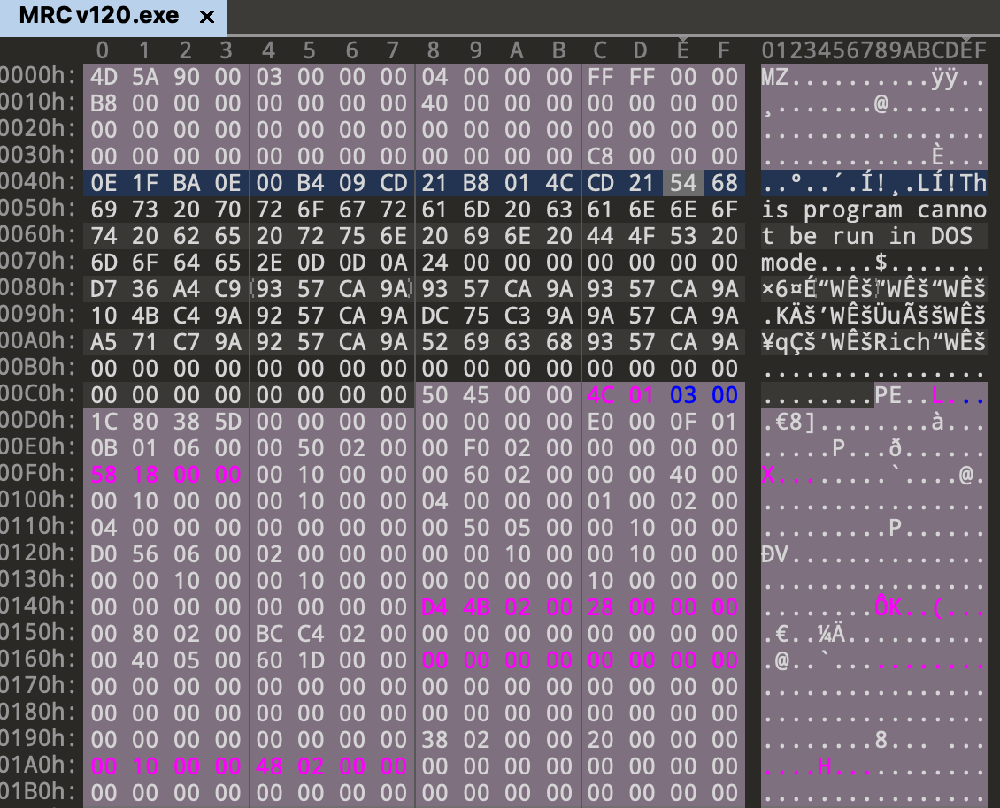
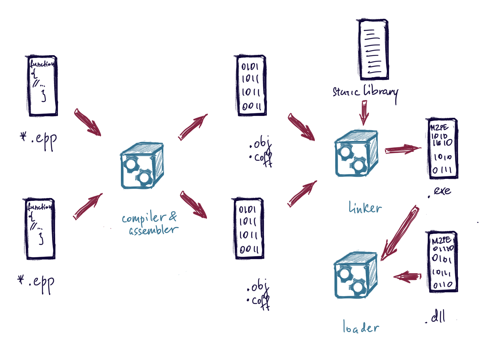

In this article I am trying to reasearch compilation and linking process.
Terms
.cpp - is a human-readable file written in any programming language. In this example it’s a file written in C++. An example of this file (meaningless for simplicity sake):
#include <iostream>
using namespace std;
int main()
{
int a, b, c;
return 0;
}
.obj, .coff - binary file with its own structure. 1 file of source code (*.cpp) is compiled into 1 .obj or .coff file. Consists of sections, symbol table (name and current location of variable or function that can be referenced by other object files), relocation table (addresses referenced in this file that the linker must adjust when it knows the final memory layout) and debug info. A header that says where in the files the sections below are located A (concatenated) text segment, which contains all the source code (with some missing addresses) A (concatenated) data segment (which combines all data and the bss segments)
.exe - an executable file with a PE header. Signature - MZ (0x4d 0x5a). Runs as a separate process. An exampe in hex is shown below. More on PE files in a separate article.

.dll - an executable file with a PE header, but some flags are different. Signature is the same - MZ (0x4d 0x5a). Doesn’t run as a separate process, loaded by exe. It’s dynamically linked library (thus d-l-l).
Compiler - converts the source human-readable code written by the programmer (*.cpp for example) to a machine level language (pure binary).
Assembler - not to be confused with assembly. Converts assembly code to a machine level language (pure binary). Assembler is usually a part of a compiler. Some compilers will translate for example C++ code into assembly and then into machine code if a special flag is passed. Otherwise they compile to ones and zeroes directly.
Linker - assemles several object files into 1 executable. Organizes memory.
Loader - reads PE file header, .text and .data sections length and allocates the space in memory.
Linking types
Static - added to the executable at link time (by the linker). This way, the library’s .text section is combined with the object file’s .text section and the library’s .data section is combined with the object file’s .data section. Thus they become one executable. This increases the size of the final executable file.
Runtime - load library and call a function only when they are needed. Usually with LoadLibrary WinAPI function. Common for malware because this way the import table doesn’t reveal the full functionality.
Dynamic - dll for windows and dlib for Mac OS. There are added into memory on laod by the loader (surprise!). The most common way of linking libraries since the size of executables are not increased and libraries can be updated separately.
Compilations and Linking steps
Assembler only knows one binary file at a time. It doesn’t know the final memory layout and addresses from other files (addresses for external functions and variables (for example, printf())). It puts zeroes instead for each address unknown. Linker will rewrite these zeroes with the correct values once it knows the final memory layout (addersses). Assembler puts labels istead of function calls.
❓ But how does the linker know what these labels mean and what addresses they are at?
Assembler creates two tables so that the linker/loader can replace the labels with addresses later.
| symbol table | relocation table |
|---|---|
| It’s actually an export table. List of all items in this file that are referenced by this file itself or by other files (functions, variables, structures). | Basically, it’s an import table. List of items from other files or libraries that are needed by this file. |
| [name] [offset] | # code line to fix??? |
After assembler or compiler is done with the source code file, linker comes in 💃 . It links text to text and data to data from all object files that are to be assembled into one executable. There would be no job for the linker, if there were one object file only and no static libraries. It uses the relocation table to see what lines to fix and symbol table to know how. It calculates absolute addresses to place instead of zeroes put by assembler or compiler.
Linker knows the length of .text and .data. It knows the correct order -> it can calculate addresses. Linker looks at the relocation table. For each line of code to fix it reads the label and then finds in symbol tables of this and other object files. When it finds the label, it reads its offset, calculates the absolute address and fixes the line from the relocation table.
The last stage is when the loader comes in. It copies .text and .data into memory, copies arguments on stack and initialized registers. Starts the program. Performs runtime linking of libraries.

References
http://courses.ics.hawaii.edu/ReviewICS312/morea/LinkingLoading/ics312_linkingloading.pdf
https://stackoverflow.com/questions/3080213/does-a-compiler-have-an-assembler-too